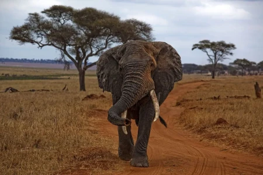

O Reino Animalia, também conhecido como Metazoa, engloba organismos multicelulares, eucariontes e heterotróficos, como os seres humanos. Os animais são organismos multicelulares, eucariontes e que apresentam nutrição heterotrófica, ou seja, não são capazes de produzir seu próprio alimento.

"O Reino Animalia ou Metazoa conta com mais de um milhão de espécies dispostas em mais de 30 filos. Uma das características mais marcantes do reino é a capacidade de locomoção, apesar de existirem também representantes sésseis (não se locomovem). Além disso, os animais possuem células que formam tecidos, com exceção dos poríferos, que não possuem tecidos verdadeiros. No que diz respeito ao habitat, os animais também apresentam grande variabilidade, pois são encontrados em ambientes aquáticos e também terrestres. Sua dieta também é variada, existindo animais herbívoros, carnívoros, parasitas e até mesmo saprófagos (alimentam-se de cadáveres de plantas e animais)"
Eucariontes: células com núcleo diferenciado, ou seja, envolvido por membrana; Heterótrofos por ingestão: necessitam ingerir outros seres vivos, pois não produzem o próprio alimento; Pluricelulares: corpo formado por muitas células com funções específicas; Aeróbicos: respiram o oxigênio que retiram do ar ou da água, conforme o meio em que vivem; A reprodução é sexuada, ou seja, envolve a união de gametas. Mas alguns invertebrados fazem de modo assexuada. Não possuem celulose e clorofila (aclorofilados), uma característica que os diferencia dos vegetais; Possuem tecidos e órgãos, com exceções dos filos mais simples como os Poríferos; Presença da blástula: esfera de células, oca, com líquido no interior. É a segunda fase de segmentação das células no desenvolvimento embrionário depois da formação do zigoto (mórula-blástula-gástrula-nêurula). Presença de Celoma, uma cavidade embrionária presente em todos os vertebrados, sendo que os platelmintos são pseudocelomados e os poríferos não possuem; A maioria dos animais têm simetria bilateral: duas metades do corpo simétricas. Também pode acontecer a simetria radial (vários planos longitudinais a partir do centro do corpo, exemplo: equinodermos) ou ainda ausência de simetria (esponjas).
Os peixes possuem o corpo revestido por escamas. Os anfíbios dependem do ambiente aquático em algumas fases da vida. Os répteis variam a temperatura corporal de acordo com o ambiente onde estão. As aves diferenciam-se pelo corpo coberto de penas. Os mamíferos alimentam-se do leite materno.
O reino animal é divido em nove filos. São eles: poríferos, platelmintos, nematódeos ou nematelmintos, anelídeos, equinodermos, moluscos, artrópodes e cordados. Veja sobre cada um deles a seguir.

Os poríferos, também chamados de esponjas ou espongiários, são animais invertebrados aquáticos e fixos em um substrato. O nome do grupo deve-se pela presença de poros pelo corpo. Os poríferos pertencem ao filo Porifera.
O Filo Platyhelminthes, ou simplesmente platelmintos, reúne um grupo de organismos que possuem corpo alongado e achatado dorsoventralmente. Muitos costumam chamar os representantes desse grupo simplesmente de vermes achatados, em razão ausência de patas e do formato de fita característico.
Os moluscos são animais invertebrados pertencentes ao filo Mollusca, o qual recebe esse nome por incluir como representantes animais de corpo mole. Atualmente existem mais de 100.000 espécies descritas, o que faz desse grupo um dos maiores filos do reino Animalia.